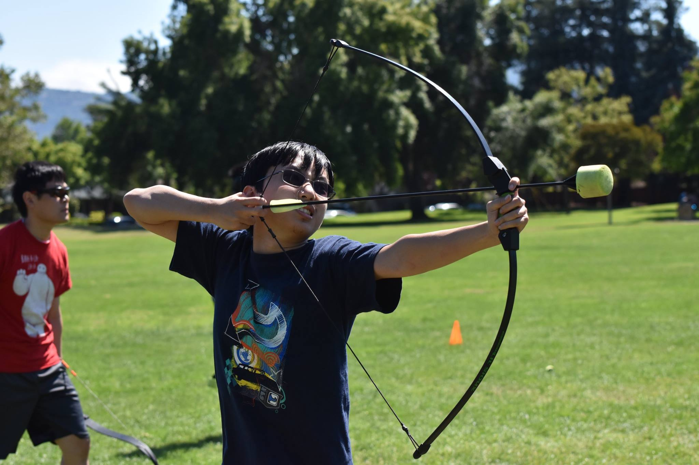

<!--
  Generated template for the RelatedUserPage page.

  See http://ionicframework.com/docs/components/#navigation for more info on
  Ionic pages and navigation.
-->
<ion-header>

  <ion-navbar>
    <ion-title>
      Related Users
    </ion-title>
  </ion-navbar>
</ion-header>

<ion-content padding-top>
  <ion-list>
    <ion-item>
      <ion-thumbnail item-start>
        
      </ion-thumbnail>
      <h2>Name: Fanghai Chen</h2>
      <p>Yili's Dad</p>
      <div item-end>
        <button ion-button clear>Delete</button>
        <button ion-button clear>Edit</button>
      </div>
    </ion-item>
  </ion-list>
  <div padding>
    <button ion-button block>Add New User</button>
  </div>

</ion-content>
